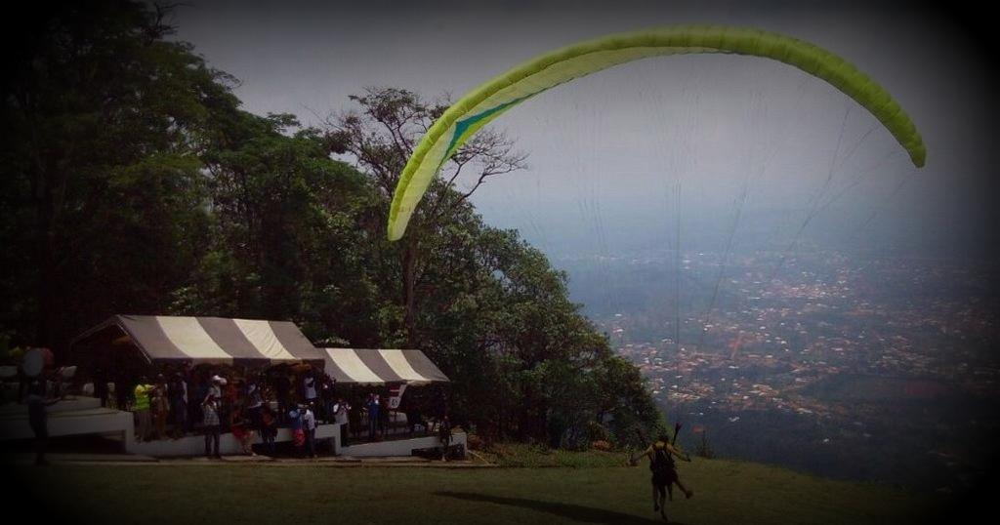
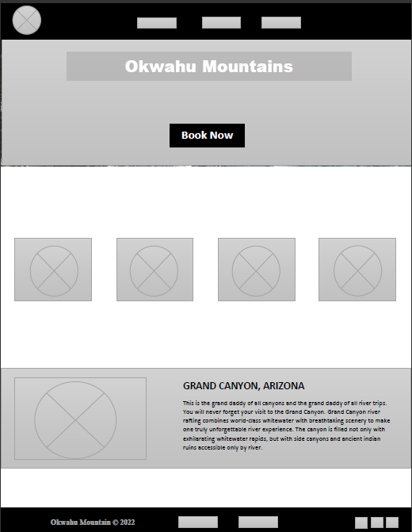

Overview
Purpose
I am creating a website for a local tourist center in my town. The name of the tourist center is called Odweanoma, there is a tall mountain which they fly parashot over there. During every easter festivity, there are a lot of tourists who come around to participate. So I want to create a website for them which will help in terms of advertisement and also people will get more information about the tourist site. My site is going to be more advanced, and all various device is going to access it without any interactions. Some of the questions were, how am I going to get information about the place, and is it going to be a free site?
Audience
My Audience is going to be Business Traveler, the Family Vacationers and also researchers / student
Branding
Website Logo
Style Guide
Color Palette
Palette URL: https://coolors.co/1e1e24-a27035-50ffb1-8e5572-ffda22| Primary | Secondary | Accent 1 | Accent 2 |
|---|---|---|---|
| [#8E5572] | [#FFDA22] | [#1E1E24] |
Typography
Heading-Font: "M PLUS 1p", "IM Fell French Canon SC";
Paragraph-Font: Lato, "PT Sans Narrow", Helvetica, sans-serif;
What is Kwahu known for
Kwahu refers to an area and group of people that live in Ghana, part of the Twi-speaking Akan group. The region has been dubbed Asaase Aban, or the Natural Fortress, in view of its position as the highest habitable elevation in the country. The Kwahu are well known for the funerary ceramics found by archaeologists. Woodcarving includes stools, which are recognized as "seats" of power, and akua ba (wooden dolls) that are associated with fertility. There are also extensive traditions of pottery and weaving throughout Akan territory.Paragliding Festival
The Ghana Tourism Authority in an attempt to promote domestic tourism, launched the Kwahu Easter Paragliding Festival at Atibie in Kwahu in 2005. This festival is an annual event which is held during every Easter in the month of April. During the event, seasoned pilots are invited to participate and thousands of people visit Odweano Mountain at Kwahu Atibie.Kwahu Mountain
The Kwahu Mountain is with an average elevation of 1,500 feet (460 m) and bordered north and south by bold erosional scarps, the plateau is deeply dissected by valleys and marked by prominent peaks (Mount Akwawa, 2,586 feet [788 m]).
Navigation
Site Map
Content
Home page
What is Kwahu known for
Kwahu refers to an area and group of people that live in Ghana, part of the Twi-speaking Akan group. The region has been dubbed Asaase Aban, or the Natural Fortress, in view of its position as the highest habitable elevation in the country. The Kwahu are well known for the funerary ceramics found by archaeologists. Woodcarving includes stools, which are recognized as "seats" of power, and akua ba (wooden dolls) that are associated with fertility. There are also extensive traditions of pottery and weaving throughout Akan territory.Images for the Home page

Gallary
Kwahu Mountain
The Kwahu Mountain is with an average elevation of 1,500 feet (460 m) and bordered north and south by bold erosional scarps, the plateau is deeply dissected by valleys and marked by prominent peaks (Mount Akwawa, 2,586 feet [788 m]).
Images for the Page 2
Contact
Contact Let's tour Kwahu for a great experience!
The best tip I can give you would be to contact Let's tour Kwahu
before you travel to Kwahu mountains. You can do this via Instagram
@letstourkwahu . Or by calling: 0545748380.
Images for the Page 3

Wireframes
Create three wireframes for your site. One for each page and list them here
Home
What is Kwahu known for
Kwahu refers to an area and group of people that live in Ghana, part of the Twi-speaking Akan group. The region has been dubbed Asaase Aban, or the Natural Fortress, in view of its position as the highest habitable elevation in the country. The Kwahu are well known for the funerary ceramics found by archaeologists. Woodcarving includes stools, which are recognized as "seats" of power, and akua ba (wooden dolls) that are associated with fertility. There are also extensive traditions of pottery and weaving throughout Akan territory. Gallary
The Kwahu Mountain is with an average elevation of 1,500 feet (460 m) and bordered north and south by bold erosional scarps, the plateau is deeply dissected by valleys and marked by prominent peaks (Mount Akwawa, 2,586 feet [788 m]).
Contact